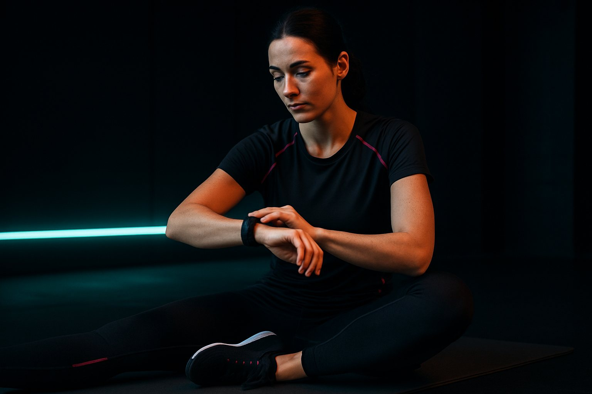
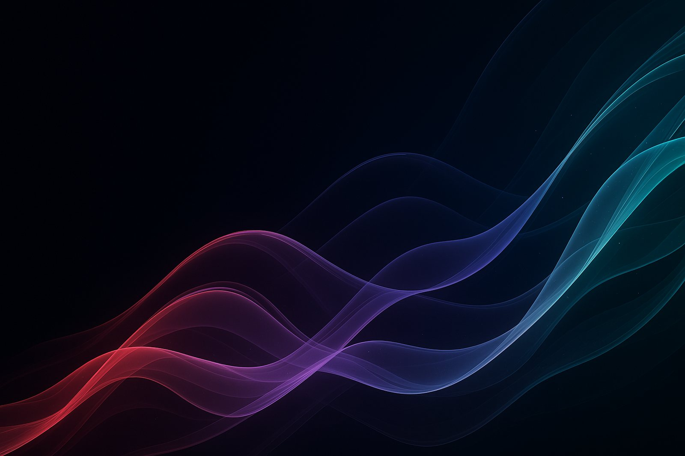
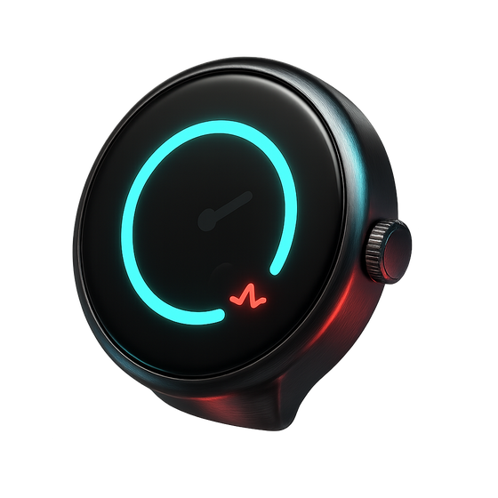
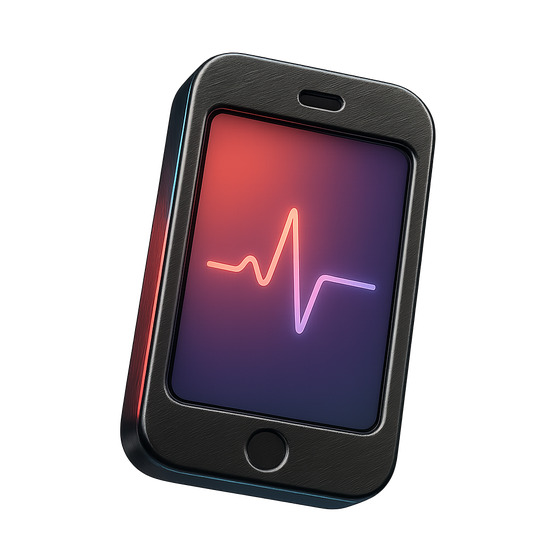
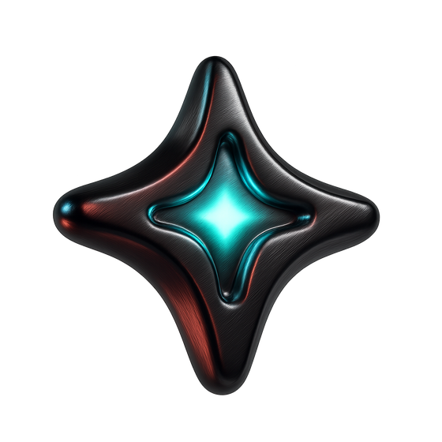

Часы, которые не показывают данные, а действуют:
проактивный агент на запястье превращает сон, пульс и календарь в следующий шаг.
07:42
ЧТ · 9 ИЮЛЯ
● 62 BPM
Проблема
Цифры есть — что делать, непонятно
73%
владельцев носимых устройств не меняют поведение по данным трекинга
4 из 10
перестают открывать приложение уже через месяц
0
действий предлагает обычный трекер — он молчит, пока не спросишь
Аудитория
25–45. Спорт, сон и любовь к цифрам
тренируются по данным, а не по настроению

считают восстановление частью спортафотографируют еду — хотят пользы, а не дневников

Сегодня
Восстановление
готов к нагрузке
62
пульс
8 214
шаги
АГЕНТОкно 18:00 свободно — ставлю интервалы?
Агент
АГЕНТ · 07:15Спал на 40 мин меньше нормы — сегодня лёгкий бег вместо силовой.
А когда лучше по календарю?
АГЕНТОкно 18:00–19:00, погода 21°. Ставлю пробежку и напомню в 17:30 ✓
Видение
Не трекер. Агент.
Для активных людей 25–45, уставших от графиков без выводов,
«Пульс» — часы с проактивным ИИ-агентом — сам предлагает действие в нужный момент:
перенести тренировку, лечь раньше, выйти на пробежку в свободное окно.
В отличие от Apple Watch, Galaxy Watch и Whoop, наш агент не ждёт вопроса.
Продукт
Контекст → решение агента → действие
ДАННЫЕ
Сон 7:36 (−40 мин) · HRV 64 мс · встречи до 17:30 · погода 21°
→
АГЕНТ РЕШАЕТ
Восстановление позволяет. Силовую — на завтра, сегодня бег в свободное окно 18:00.
→
ДЕЙСТВИЕ
Тренировка в календаре · напоминание в 17:30 · разминка готова ✓
Интерфейс
Цифры-герои, решения в один тап

Часы
Циферблат с кольцами восстановления, live-пульс, проактивные карточки агента — ответ «да» одним касанием.

Приложение
Дашборд дня, диалог с агентом, детали сна с выводом, а не графиком. Всё на одной дизайн-системе.

Тон интерфейса
Тёмный космос, неон энергии, крупная цифровая типографика Unbounded — спорт и футуризм без «медицинской скуки».
Растём вместе
Челленджи и общие тренировки
Агент выравнивает шансы по восстановлению каждого —
соревноваться честно могут люди разного уровня. Приглашение друга = месяц Pulse+ в подарок.
Монетизация
Агент — двигатель подписки
399 ₽
Pulse+ в месяц: проактивный агент, голос, интеграции, планы восстановления
LTV ×3
подписчик с активным агентом остаётся втрое дольше — гипотеза квартала
14 дней
бесплатный триал: агент успевает доказать пользу до первого платежа
Гипотеза квартала
Проактивность удерживает
Если агент делает ≥3 полезных предложения в неделю,
то Retention платной подписки на 3-й месяц вырастет с 62% до 80% —
без роста CAC. Проверяем пилотом на 500 подписчиках, 8 недель.
80%
целевой Retention M3
500
участников пилота
8 нед
time-to-evidence
Следующий шаг
Дайте агенту 8 недель
Пилот на 500 подписчиков: бюджет 1,2 млн ₽, первое доказательство ценности — через 2 недели после старта.